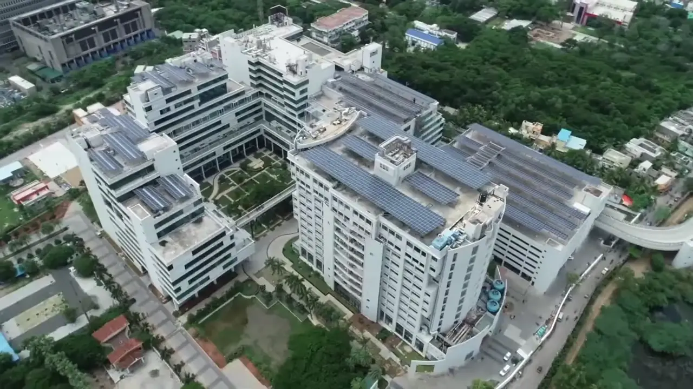
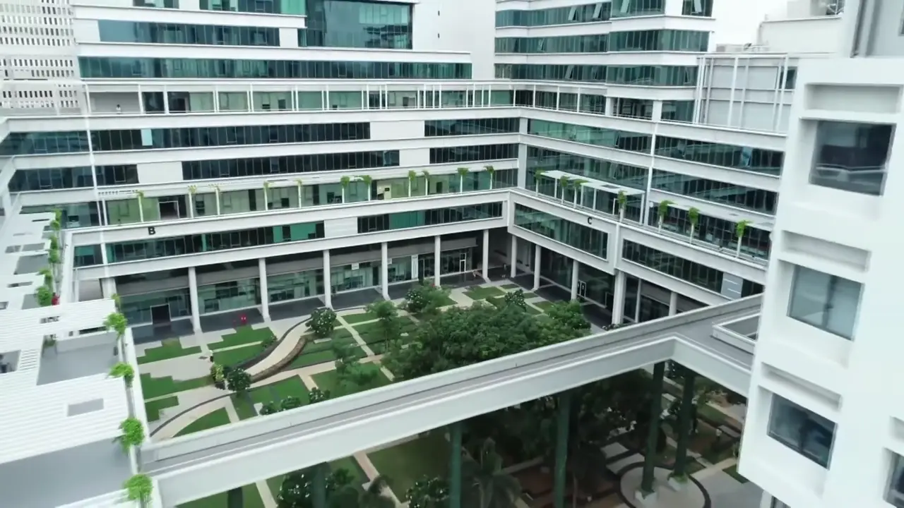

01 / SOFTWARE / DEMONSTRATION
↗[ 01 ] SPACEKAUR / INDIA
We are Proud to Build
Critical Sub Systems for
India's First
Smart Ammunition
Autonomous systems for
space and aerospace applications.
SCROLL TO EXPLORE ↓INCUBATED AT IIT MADRAS
INCUBATED AT IIT MADRASSPACE & AEROSPACEENGINEERING AUTONOMY ↗
[ 02 ] OUR CONVICTION
Establishing peace
through strength.
We build autonomous systems for space and aerospace applications.
Our capabilities include modelling, servo drives, control algorithms, embedded software and precision actuators.
The SpaceKaur story[ 03 ] OUR ROOTS
Incubated at
IIT Madras.
An environment for ideas.
A workbench to bring them to life.


IIT MADRAS / SPACEKAUR ENGINEERINGCAMPUS FILM: IITM RESEARCH PARK ↗
[ 04 ] THE HARDWARE
The hardware
behind autonomy.
Servo drive. Precision motor.
Developed as part of the same system.
SERVO DRIVEISHER SKD-I 48/5
PRECISION MOTOROASIS SKM-D22
 SPACEKAUR / MOTOR + DRIVE ↗
SPACEKAUR / MOTOR + DRIVE ↗[ 05 ] ENGINEERING IN MOTION
From code
to control.
Explore our software and control development at the workbench.
02 / CONTROLS / DEMONSTRATION
↗PRODIGY SKD-I 48/5
[ 06 ] OUR CAPABILITIES
Our capabilities.
01Modelling & validation
Electromechanical modelling.
Simulink and Simscape modelling of electromechanical systems, with validation against measured hardware data.
Discuss this capability02Servo drives
Servo drive development.
Servo drives for position control applications, developed around the needs of the system.
Discuss this capability03Control algorithms
Control system development.
Control system development for autonomous space and aerospace platforms.
Discuss this capability04Software & firmware
Embedded software.
Embedded firmware and software for position control, tuning and data analysis.
Discuss this capability05Precision actuators
Precision actuation.
High precision actuation, bringing mechanical design, electronics and control together.
Discuss this capabilityOASIS SKM-D22 / PRODUCT FILM
[ NEXT ] CONTACT